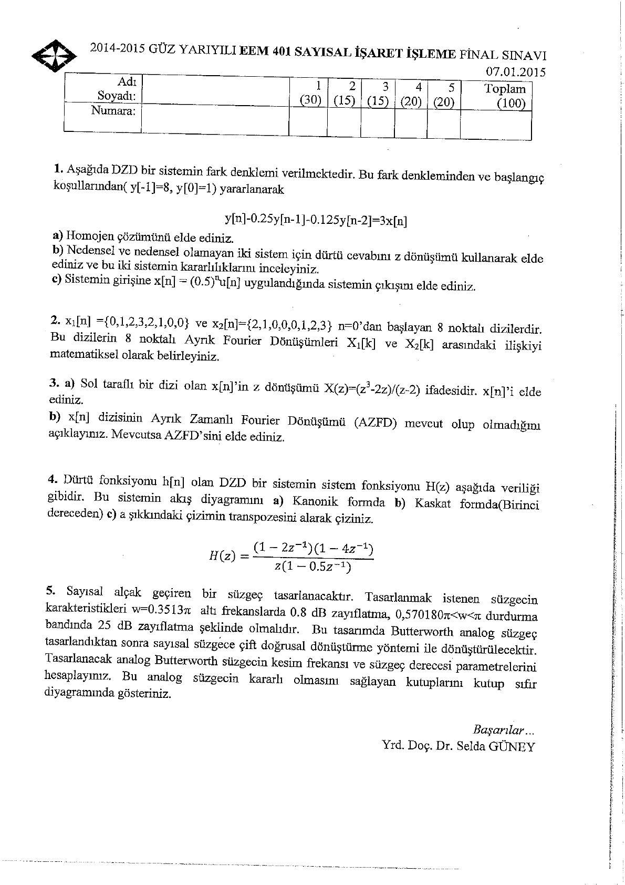
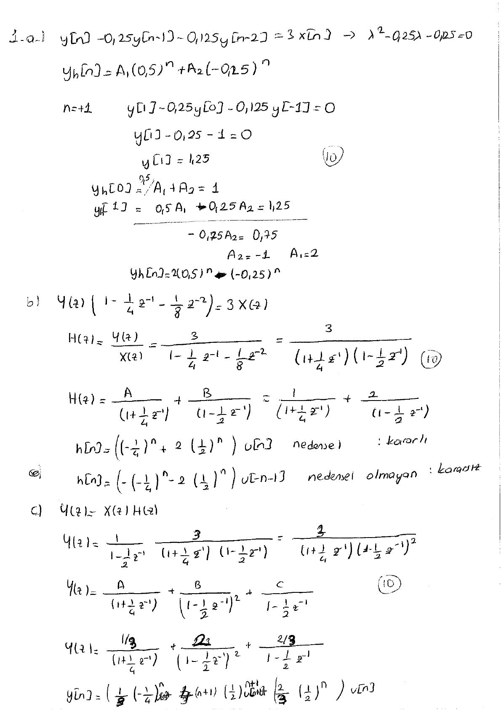
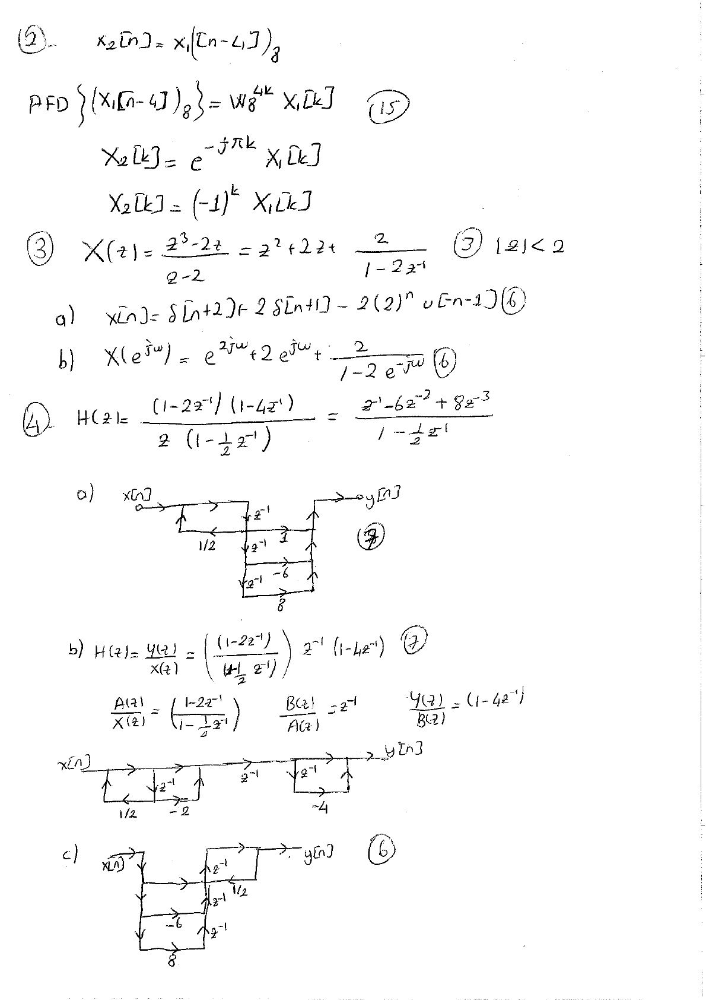
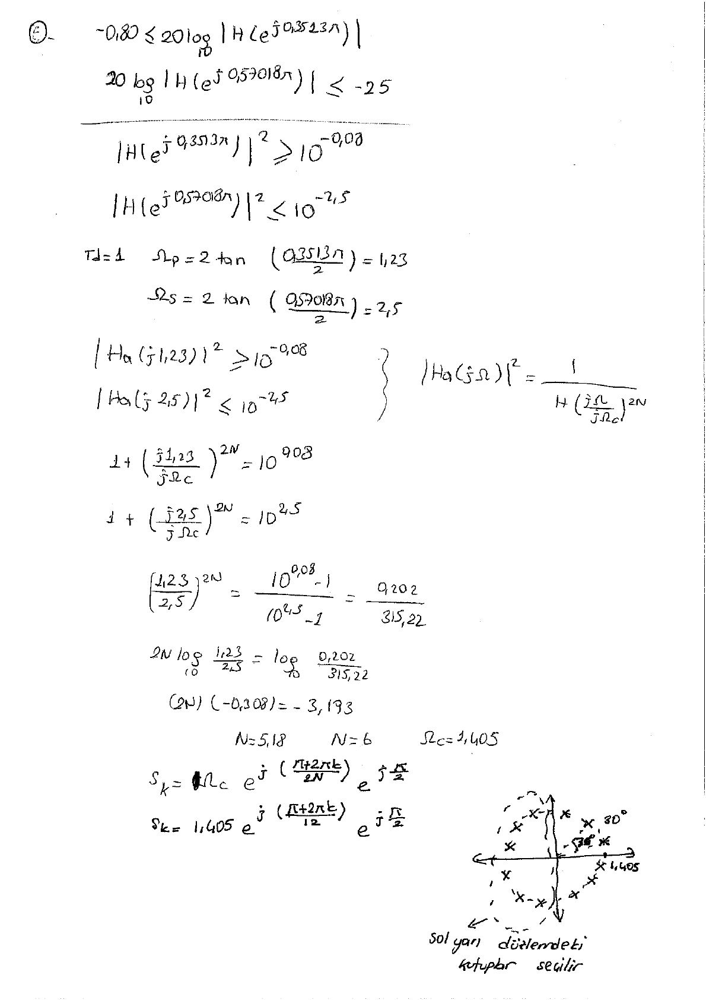

· EEM401
EEM401 Sayısal İşaret İşleme: 2014-2015 Güz Final Sınavı (07.01.2015) Soruları ve Çözümleri
EEM401 – Sayısal Sinyal İşleme · 07.01.2015 · 14.11.2026
EEM401 Sayısal İşaret İşleme dersinin 2014–2015 güz yarıyılı final sınavı (07.01.2015, Yrd. Doç. Dr. Selda Güney) ve el yazısı çözümüm (sınav sonrası alınan "final soru çözümleri"). Ad ve numara alanları boştur. Taranmış PDF yazının sonunda indirilebilir.
Sorular
- DZD bir sistemin fark denklemi y[n] − 0,25y[n−1] − 0,125y[n−2] = 3x[n], başlangıç koşulları y[−1] = 8, y[0] = 1. (30 puan)
a) Homojen çözümünü elde ediniz. b) Nedensel ve nedensel olmayan iki sistem için dürtü cevabını z dönüşümü kullanarak elde ediniz ve bu iki sistemin kararlılıklarını inceleyiniz. c) Sistemin girişine x[n] = (0,5)ⁿu[n] uygulandığında çıkışı elde ediniz. 2. x1[n] = {0, 1, 2, 3, 2, 1, 0, 0} ve x2[n] = {2, 1, 0, 0, 0, 1, 2, 3}, n = 0'dan başlayan 8 noktalı dizilerdir. Bu dizilerin 8 noktalı AFD'leri X1[k] ve X2[k] arasındaki ilişkiyi matematiksel olarak belirleyiniz. (15 puan) 3. a) Sol taraflı bir dizi olan x[n]'in z dönüşümü X(z) = (z³ − 2z)/(z − 2). x[n]'i elde ediniz. b) x[n]'in AZFD'sinin mevcut olup olmadığını açıklayınız; mevcutsa elde ediniz. (15 puan) 4. H(z) = (1 − 2z⁻¹)(1 − 4z⁻¹) / [z(1 − 0,5z⁻¹)] sistem fonksiyonunun akış diyagramını a) kanonik formda, b) kaskat formda (birinci dereceden), c) a şıkkındaki çizimin transpozesini alarak çiziniz. (20 puan) 5. Sayısal alçak geçiren süzgeç: ω = 0,3513π altı frekanslarda 0,8 dB zayıflatma, 0,57018π < ω < π durdurma bandında 25 dB zayıflatma. Butterworth analog süzgeç tasarlanıp çift doğrusal dönüşüm yöntemiyle sayısal süzgece dönüştürülecektir. Analog süzgecin kesim frekansı ve derecesini hesaplayınız; kararlılığı sağlayan kutupları kutup-sıfır diyagramında gösteriniz. (20 puan)
Çözüm
1a. Karakteristik denklem λ² − 0,25λ − 0,125 = 0, λ = 0,5 ve λ = −0,25. y_h[n] = A1(0,5)ⁿ + A2(−0,25)ⁿ. n = 1 için y[1] = 0,25·y[0] + 0,125·y[−1] = 0,25 + 1 = 1,25. y_h[0] = A1 + A2 = 1 ve y_h[1] = 0,5A1 − 0,25A2 = 1,25 ⇒ A2 = −1, A1 = 2: y_h[n] = 2(0,5)ⁿ − (−0,25)ⁿ.
1b. H(z) = 3 / (1 − ¼z⁻¹ − ⅛z⁻²) = 3 / [(1 + ¼z⁻¹)(1 − ½z⁻¹)] = 1/(1 + ¼z⁻¹) + 2/(1 − ½z⁻¹).
- Nedensel (|z| > 1/2): h[n] = [(−¼)ⁿ + 2(½)ⁿ]u[n]; kutuplar birim çember içinde, kararlı.
- Nedensel olmayan (|z| < 1/4): h[n] = [−(−¼)ⁿ − 2(½)ⁿ]u[−n−1]; ROC birim çemberi içermez, kararsız.
1c. Y(z) = X(z)H(z) = 3 / [(1 + ¼z⁻¹)(1 − ½z⁻¹)²] = A/(1 + ¼z⁻¹) + B/(1 − ½z⁻¹)² + C/(1 − ½z⁻¹); A = 1/3, B = 2, C = 2/3: y[n] = [(1/3)(−¼)ⁿ + 2(n + 1)(½)ⁿ + (2/3)(½)ⁿ]u[n]. Kontrol: y[0] = 1/3 + 2 + 2/3 = 3 = 3x[0] ✓.
2. x2[n] = x1[((n − 4))₈] (4 örnek dairesel kaydırma). Dairesel kaydırma özelliğiyle X2[k] = W₈^{4k}·X1[k] = e^{−jπk}·X1[k]: X2[k] = (−1)ᵏ·X1[k].
3a. X(z) = (z³ − 2z)/(z − 2) = z² + 2z + 2/(1 − 2z⁻¹), ROC: |z| < 2 (sol taraflı). x[n] = δ[n + 2] + 2δ[n + 1] − 2·2ⁿ·u[−n − 1]. Not: Kâğıtta üçüncü terim "−2(2)ⁿu[n−1]" gibi yazılmış; sol taraflı ROC için doğru ifade u[−n−1]'dir. 3b. ROC (|z| < 2) birim çemberi içerdiğinden AZFD mevcuttur: X(e^jω) = e^{j2ω} + 2e^{jω} + 2/(1 − 2e^{−jω}).
4. H(z) = (1 − 2z⁻¹)(1 − 4z⁻¹) / [z(1 − 0,5z⁻¹)] = (z⁻¹ − 6z⁻² + 8z⁻³)/(1 − 0,5z⁻¹).
- a) Kanonik form: tek geri besleme kolu (katsayı 1/2) ve ileri kollar z⁻¹, −6 z⁻², 8 z⁻³ katsayılı (bu: katsayılar 1, −6, 8).
- b) Kaskat form: [(1 − 2z⁻¹)/(1 − ½z⁻¹)]·z⁻¹·(1 − 4z⁻¹); önce 1/2 geribeslemeli ve −2 ileri kollu birinci derece bölüm, ardından bir gecikme, ardından −4 katsayılı FIR bölümü.
- c) Transpoze form: a) şıkkındaki akış şemasının tüm dalları ters çevrilip giriş ile çıkış yer değiştirilir. (Çizimler sayfa 3'tedir.)
5. Gereksinimler: |H(e^{j0,3513π})|² ≥ 10^{−0,08} ve |H(e^{j0,57018π})|² ≤ 10^{−2,5}. Td = 1 için ön bükme: Ωp = 2·tan(0,3513π/2) = 1,23; Ωs = 2·tan(0,57018π/2) = 2,5. |Ha(jΩ)|² = 1/(1 + (Ω/Ωc)^{2N}) ile: (1,23/2,5)^{2N} = (10^{0,08} − 1)/(10^{2,5} − 1) = 0,202/315,22 ⇒ 2N·log10(1,23/2,5) = log10(0,202/315,22) ⇒ N = 5,18 ⇒ N = 6, Ωc = 1,405. Kutuplar s_k = Ωc·e^{j(π + 2πk)/12}·e^{jπ/2}; yalnızca sol yarı düzlemdeki 6 kutup seçilir (kararlılık için), Ωc = 1,405 yarıçaplı çember üzerindedir.



